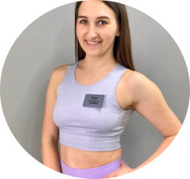

Классические танцы давно вышли за привычные рамки
Школа танцев приглашает вас на уроки go-go в школе танцев в Перми! На уроках танцев гоу-гоу особый акцент делается на танцевальной базе – всему тому, из чего и складывается в конечном итоге танец. Сначала вы выучите просто отдельные движения, позже сможете использовать их в своих танцах так же непринужденно, будто вы всегда умели так двигаться! Весь смысл занятий go-go в том, что они обращены на освоение разнообразных стилей современных танцев, а также на изучение общих движений и на умение смешивать их произвольно под абсолютно любую музыку.
Почему нас выбирают
Наши преимущества перед другими школами танцев

СОВРЕМЕННЫЕ ЗАЛЫ
Наша школа оборудована 4
современными оборудованными
залами для занятий танцами

ОПЫТНЫЕ НАСТАВНИКИ
В нашей команде работают
профессиональные тренеры -
многократные чемпионы по танцам

ПРОФЕССИОАНЛЬНЫЕ ПРОГРАММЫ
Мы грамотно составляем программу
занятий с учетом индивидуальностей
каждого начинающего танцора

Новый зал для персональных занятий
Приглашаем вас на наши занятия танцами гоу-гоу, в Перми. У нас работает более 10 филиалов – вы всегда сможете найти зал недалеко от вашего дома, работы или учебы.
На уроках особое внимание уделяется стилю и профессионализму исполнения, отрабатываются разные аспекты умения хорошо двигаться под музыку: пластика всего тела, эффект замедления и ускорения, правильные переходы танца из одного стиля в другой, работа с эмоциями в танце, с окружающей обстановкой, с пространством, со зрителем. Программа включает в себя и работу над пластикой тела, и растяжку, и развитие резкости и сексуальности, и развитие гибкости, внимание уделяется общей хорошей физической подготовке.
Вы сможете чувствовать себя уверенно и свободно на любом танцполе, в любом клубе. Вы научитесь двигаться под совершенно любую музыку и обретете свой собственный неповторимый стиль танца! Go-go-танцы – это умение энергично и эстетично танцевать под любую музыку.
Хотите танцевать вместе? Давайте начинать
Внимание, акция ограничена!
Что дают Вам танцы?
Какую пользу можно получить, регулярно занимаясь танцами?

СТРОЙНОЕ ТЕЛО
Регулярные занятия танцами сжигают
лишние калории, а Ваше
тело становится намного
красивее и стройнее

ХОРОШЕЕ ЗДОРОВЬЕ
Занятия танцами повышают
выносливость Вашего организма,
а следственно имунитет и
устойчивость к стрессам

ОГРОМНЫЙ ЗАРЯД ЭНЕРГИИ
Физические нагрузки повышают выносливость
человеческого тела, за
счет чего вы всегда будете в тонусе
Наставники по танцам
Лучшие мастера по танцам возьмутся за Ваше обучние

Ирина Тимофеева, 32 года
Главный тренер
Александра Михайлова, 26 лет
Персональный тренер

Александра Михайлова, 26 лет
Персональный тренер

Ольга Макарова, 35 лет
Персональный тренер